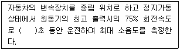
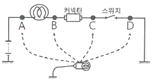

자동차정비산업기사 (2019-08-04 기출문제)
1과목: 일반기계공학
1. 다음 중 금긋기에 적당하고 0점 조정이 불가능한 하이트 게이지는?
- HM형 하이트 게이지
- HB형 하이트 게이지
- HT형 하이트 게이지
- 다이얼 하이트 게이지
(정답률: 62%)

2. 허용굽힘응력 60 N/mm2인 단순지지보가 1×106N·㎜의 최대 굽힘모멘트를 받을 때 필요한 단면계수의 최소값은 몇 ㎣ 인가?
- 1667
- 16667
- 17660
- 26667
(정답률: 64%)
3. 열응력에 대한 설명으로 옳지 않은 것은?
- 재료의 온도차에 비례한다.
- 재료의 단면적에 비례한다.
- 재료의 세로탄성계수에 비례한다.
- 재료의 선팽창계수에 비례한다.
(정답률: 49%)
4. 축과 보스에 모두 키 홈을 판 것으로 고정된 상태로 사용되는 키(key)는?
- 코터
- 원뿔 키
- 묻힘 키
- 안장 키
(정답률: 67%)
5. 일정한 방향의 회전으로 발생한 원심력에 의해 자동으로 작동되는 브레이크는?
- 캠 브레이크
- 블록 브레이크
- 내확 브레이크
- 원판 브레이크
(정답률: 56%)
6. 기어전동에서 원동축과 종동축이 서로 평행하지 않은 경우에 사용되는 기어는?
- 스퍼 기어
- 내접 기어
- 헬리컬 기어
- 하이포이드 기어
(정답률: 69%)
7. 탄소강을 담금질 했을 때 나타나는 다음 조직 중 경도가 가장 낮은 것은?
- 오스테나이트
- 트루스타이트
- 마텐자이트
- 소르바이트
(정답률: 64%)
8. 축열실과 반사로를 사용하여 장입물을 용해정련하는 방법으로 우수한 강을 얻을 수 있고 다량생산에 적합한 용해로는?
- 전로
- 평로
- 전기로
- 도가니로
(정답률: 66%)
9. 판금 가공(sheet metal working)의 종류에 해당되지 않는 것은?
- 접합 가공
- 단조 가공
- 성형 가공
- 전단 가공
(정답률: 60%)
10. 외부로부터 윤활유 또는 윤활제의 공급 없이 특수한 조건에서도 사용 가능한 베어링은?
- 블루메탈 베어링
- 화이트메탈 베어링
- 오일리스 베어링
- 주석베어링메탈 베어링
(정답률: 79%)
11. 2개의 입구와 1개의 공통 출구를 가지고, 출구는 입구 압력의 작용에 의하여 입구의 한쪽 방향에 자동적으로 접속되는 밸브는?
- 리밋 밸브
- 셔틀 밸브
- 2압 밸브
- 급속배기 밸브
(정답률: 60%)
12. 공작물을 단면적 100cm2 인 유압실린더로 1분에 2m 의 속도로 이송시키기 위해 필요한 유량은 몇 L/min 인가?
- 10
- 20
- 30
- 40
(정답률: 60%)
13. 보의 지지방법에 따른 분류 중 부정정보의 종류인 것은?
- 단순지지보
- 외팔보
- 내다지보
- 양단고정보
(정답률: 57%)
14. 피복 아크용접봉의 구비조건이 아닌 것은?
- 슬래그 제거가 쉬울 것
- 용착금속의 성질이 우수할 것
- 용접 시 유해가스가 발생하지 않을 것
- 심선보다 피복제가 약간 빨리 녹을 것
(정답률: 75%)
15. FRP라고도 하며 우수한 경량성 재료로 폴리에스테르와 에폭시 수지가 기지재료인 복합재료는?
- 섬유강화 금속
- 섬유강화 콘크리트
- 섬유강화 세라믹
- 섬유강화 플라스틱
(정답률: 73%)
16. 유압회로에서 액추에이터를 작동시키지 않는 시간에는 펌프에서 송출되어 온 작동유체를 저압으로 탱크에 복귀시키는 회로는?
- 감압 회로
- 동기 회로
- 무부하 회로
- 미터 인 회로
(정답률: 49%)
17. 다음 중 삼각나사에 대한 일반적인 설명으로 옳은 것은?
- 동력전달용으로 적합하다.
- 나사효율이 좋다.
- 마찰계수가 크다.
- 자립(self lock)작용이 없다.
(정답률: 49%)
18. 작은 입자의 숫돌로 작은 압력으로 일감을 누르면서 가공물에 이송을 주고, 동시에 숫돌에 진동을 주어 단시간에 원통의 내면이나 외면 및 평면을 다듬질 가공하는 것은?
- 슈퍼 퍼니싱
- 브로칭
- 호닝
- 래핑
(정답률: 56%)
19. 프와송 비(poisson's ratio)에 대한 설명으로 옳은 것은?
- 종변형률과 횡변형률의 곱이다.
- 수직응력과 종탄성계수를 곱한 값이다.
- 횡변형률을 종변형률로 나눈 값이다.
- 전단응력과 횡탄성계수의 곱이다.
(정답률: 67%)
20. 다음 중 내식용 알루미늄 합금에 속하지 않는 것은?
- Al-Mn계의 알민
- Al-Mg-Si계의 알드리
- Al-Mg계의 하이드로날륨
- Al-Cu-Ni-Mg계의 Y합금
(정답률: 63%)
2과목: 자동차엔진
21. 라디에이터 캡 시험기로 점검할 수 없는 것은?
- 라디에이터 캡의 불량
- 라디에이터 코어 막힘 정도
- 라디에이터 코어 손상으로 인한 누수
- 냉각수 호스 및 파이프와 연결부에서의 누수
(정답률: 58%)
22. 다음은 운행차 정기검사에서 배기소음 측정을 위한 검사방법에 대한 설명이다. ( )안에 알맞은 것은?

- 3
- 4
- 6
- 8
(정답률: 72%)
23. 전자제어 엔진에서 수온센서 단선으로 컴퓨터(ECU)에 정상적인 냉각수온값이 입력되지 않으면 어떻게 연료분사 되는가?
- 연료 분사를 중단
- 흡기 온도를 기준으로 분사
- 엔진 오일온도를 기준으로 분사
- ECU에 의한 페일 세이프 값을 근거로 분사
(정답률: 74%)
24. 엔진의 냉각장치에 사용되는 서모스탯에 대한 설명으로 거리가 먼 것은?
- 과열을 방지한다.
- 엔진의 온도를 일정하게 유지한다.
- 과냉을 통해 차내 난방효과를 낮춘다.
- 냉각수 통로를 개폐하여 온도를 조절한다.
(정답률: 80%)
25. 디젤엔진에서 냉간 시 시동성 향상을 위해 예열장치를 두어 흡기를 예열하는 방식 중 가열 플랜지 방법을 주로 사용하는 연소실 형식은?
- 직접분사식
- 와류실식
- 예연소실식
- 공기실식
(정답률: 51%)
26. 배기가스 후처리 장치(DPF)의 필터에 포집된 PM을 연소시키기 위한 연료분사 방법으로 옳은 것은??
- 주 분사
- 점화 분사
- 사후 분사
- 파일럿 분사
(정답률: 77%)
27. 가솔린엔진의 연료 구비조건으로 틀린 것은?
- 발열량이 클 것
- 옥탄가가 높을 것
- 연소속도가 빠를 것
- 온도와 유동성이 비례할 것
(정답률: 60%)
28. 실린더 헤드의 변형 점검 시 사용되는 측정도구는?
- 보어 게이지
- 마이크로미터
- 간극 게이지
- 텔리스코핑 게이지
(정답률: 69%)
29. 전자제어 연료분사장치에서 차량의 가·감속판단에 사용되는 센서는?
- 스로틀포지션센서
- 수온센서
- 노크센서
- 산소센서
(정답률: 80%)
30. 가솔린엔진에서 인젝터의 연료 분사량 제어와 직접적으로 관계있는 것은?
- 인젝터의 니들 밸브 지름
- 인젝터의 니들 밸브 유효 행정
- 인젝터의 솔레노이드 코일 통전 시간
- 인젝터의 솔레노이드 코일 차단 전류 크기
(정답률: 77%)
31. 단행정 엔진의 특징에 대한 설명으로 틀린 것은?
- 직렬형 엔진인 경우 엔진의 길이가 짧아진다.
- 직렬형 엔진인 경우 엔진의 높이를 낮게 할 수 있다.
- 피스톤의 평균속도를 올리지 않고 회전속도를 높일 수 있다.
- 흡·배기 밸브의 지름을 크게 할 수 있어 흡입효율을 높일 수 있다.
(정답률: 61%)
32. 압축상사점에서 연소실체적(Vc)은 0.1ℓ이고 압력(Pc)은 30bar 이다. 체적이 1.1ℓ로 증가하면 압력은 약 몇 bar가 되는가? (단, 동작유체는 이상기체이며 등온과정이다.)
- 2.73
- 3.3
- 27.3
- 33
(정답률: 45%)
33. 운행차 정기검사에서 자동차 배기소음 허용기준으로 옳은 것은? (단, 2006년 1월 1일 이후 제작되어 운행하고 있는 소형 승용자동차이다.)
- 95㏈ 이하
- 100㏈ 이하
- 110㏈ 이하
- 112㏈ 이하
(정답률: 59%)
34. 엔진이 과열되는 원인이 아닌 것은?
- 워터펌프 작동 불량
- 라디에이터의 코어 손상
- 워터재킷 내 스케일 과다
- 수온조절기가 열린 상태로 고장
(정답률: 78%)
35. 가솔린 300cc를 연소시키기 위해 필요한 공기는 약 몇 kg 인가? (단, 혼합비는 15 : 1 이고 가솔린의 비중은 0.75 이다.)
- 1.19
- 2.42
- 3.38
- 4.92
(정답률: 55%)
36. 실린더의 라이너에 대한 설명으로 틀린 것은?
- 도금하기가 쉽다.
- 건식과 습식이 있다.
- 라이너가 마모되면 보링 작업을 해야 한다.
- 특수주철을 사용하여 원심 주조할 수 있다.
(정답률: 60%)
37. 오토사이클의 압축비가 8.5일 경우 이론 열효율은 약 몇 % 인가? (단, 공기의 비열비는 1.4이다.)
- 49.6
- 52.4
- 54.6
- 57.5
(정답률: 41%)
38. DOHC 엔진의 특징이 아닌 것은?
- 구조가 간단하다.
- 연소효율이 좋다.
- 최고회전속도를 높일 수 있다.
- 흡입 효율의 향상으로 응답성이 좋다.
(정답률: 75%)
39. GDI엔진에 대한 설명으로 틀린 것은?
- 흡입 과정에서 공기의 온도를 높인다.
- 엔진 운전 조건에 따라 레일압력이 변동된다.
- 고부하 운전영역에서 흡입공기 밀도가 높아진다.
- 분사시간은 흡입공기량의 정보에 의해 보정된다.
(정답률: 55%)
40. 전자제어 엔진에서 연료 분사 피드백에 사용되는 센서는??
- 수온센서
- 스로틀포지션센서
- 산소센서
- 에어플로어센서
(정답률: 68%)
3과목: 자동차섀시
41. 클러치의 차단 불량 원인으로 틀린 것은??
- 클러치 페달 자유간극 과소
- 클러치 유압계통에 공기 유입
- 릴리스 포크의 소손 또는 파손
- 릴리스 베어링의 소손 또는 파손
(정답률: 66%)
42. 전륜 6속 자동변속기 전자제어 장치에서 변속기 컨트롤 모듈(TCM)의 입력신호로 틀린 것은?
- 공기량 센서
- 오일 온도센서
- 입력축 속도 센서
- 인히비터 스위치 신호
(정답률: 50%)
43. 조향 핸들을 2바퀴 돌렸을 때 피트먼 암이 90° 움직였다면 조향 기어비는?
- 1 : 6
- 1 : 7
- 8 : 1
- 9 : 1
(정답률: 72%)
44. 자동변속기에서 유성기어 장치의 3요소가 아닌 것은?
- 선 기어
- 캐리어
- 링 기어
- 베벨 기어
(정답률: 72%)
45. 자동차 앞바퀴 정렬 중 “캐스터”에 관한 설명으로 옳은 것은?
- 자동차의 전륜을 위에서 보았을 때 바퀴의 앞부분이 뒷부분보다 좁은 상태를 말한다.
- 자동차의 전륜을 앞에서 보았을 때 바퀴중심선의 윗부분이 약간 벌어져 있는 상태를 말한다.
- 자동차의 전륜을 옆에서 보면 킹핀의 중심선이 수직선에 대하여 어느 한쪽으로 기울어져 있는 상태를 말한다.
- 자동차의 전륜을 앞에서 보면 킹핀의 중심선이 수직선에 대하여 약간 안쪽으로 설치된 상태를 말한다.
(정답률: 73%)
46. 록업(lock-up) 클러치가 작동할 때 동력전달 순서로 옳은 것은?
- 엔진 → 드라이브 플레이트 → 컨버터 케이스 → 펌프 임펠러 → 록 업 클러치 → 터빈 러너허브 → 입력 샤프트
- 엔진 → 드라이브 플레이트 → 터빈 러너 → 터빈 러너 허브 → 록 업 클러치 → 입력 샤프트
- 엔진 → 드라이브 플레이트 → 컨버터 케이스 → 록 업 클러치 → 터빈 러너 허브 → 입력 샤프트
- 엔진 → 드라이브 플레이트 → 터빈 러너 → 펌프 임펠러 → 일 방향 클러치 → 입력 샤프트
(정답률: 54%)
47. 총 중량 1톤인 자동차가 72㎞/h로 주행 중 급제동하였을 때 운동에너지가 모두 브레이크 드럼에 흡수되어 열이 되었다. 흡수된 열량(㎉)은 얼마인가? (단, 노면의 마찰계수는 1 이다.)
- 47.79
- 52.30
- 54.68
- 60.25
(정답률: 30%)
48. 수동변속기의 클러치에서 디스크의 마모가 너무 빠르게 발생하는 경우로 틀린 것은?
- 지나친 반클러치의 사용
- 디스크 페이싱의 재질 불량
- 다이어프램 스프링의 장력이 과도할 때
- 디스크 교환 시 페이싱 단면적이 규정보다 작은 제품을 사용하였을 경우
(정답률: 63%)
49. 유압식과 비교한 전동식 동력조향장치(MDPS)의 장점으로 틀린 것은?
- 부품수가 적다.
- 연비가 향상된다.
- 구조가 단순하다.
- 조향 휠 조작력이 증가한다.
(정답률: 49%)
50. 전자제어 제동장치(ABS)의 유압제어 모드에서 주행 중 급제동 시 고착된 바퀴의 유압제어는?
- 감압제어
- 정압제어
- 분압제어
- 증압제어
(정답률: 67%)
51. 전자제어 제동 장치(ABS)에서 하이드로릭 유닛의 내부 구성부품으로 틀린 것은?
- 어큐뮬레이터
- 인렛 미터링 밸브
- 상시 열림 솔레노이드 밸브
- 상시 닫힘 솔레노이드 밸브
(정답률: 59%)
52. 브레이크 페달을 강하게 밟을 때 후륜이 먼저 록(lock) 되지 않도록 하기 위하여 유압이 일정 압력으로 상승하면 그 이상 후륜 측에 유압이 가해지지 않도록 제한하는 장치는?
- 프로포셔닝 밸브
- 압력 체크 밸브
- 이너셔 밸브
- EGR 밸브
(정답률: 73%)
53. 동기물림식 수동변속기의 주요 구성품이 아닌 것은?
- 도그 클러치
- 클러치 허브
- 클러치 슬리브
- 싱크로나이저 링
(정답률: 65%)
54. TCS(Traction Control System)의 제어장치에 관련이 없는 센서는?
- 냉각수온 센서
- 아이들 신호
- 후차륜 속도 센서
- 가속페달포지션 센서
(정답률: 68%)
55. 브레이크 슈의 길이와 폭이 85㎜×35㎜, 브레이크 슈를 미는 힘이 50 kgf 일 때 브레이크 압력은 약 몇 kgf/cm2 인가?
- 1.68
- 4.57
- 16.8
- 45.7
(정답률: 38%)
56. 전자제어 현가장치(ECS)에 대한 입력 신호에 해당되지 않는 것은?
- 도어 스위치
- 조향 휠 각도
- 차속 센서
- 파워 윈도우 스위치
(정답률: 65%)
57. 금속분말을 소결시킨 브레이크 라이닝으로 열전도성이 크며 몇 개의 조각으로 나누어 슈에 설치된 것은?
- 몰드 라이닝
- 위븐 라이닝
- 메탈릭 라이닝
- 세미 메탈릭 라이닝
(정답률: 61%)
58. 유체 클러치의 스톨 포인트에 대한 설명으로 틀린 것은?
- 속도비가 “0”일 때를 의미한다.
- 스톨 포인트에서 효율이 최대가 된다.
- 스톨 포인트에서 토크비가 최대가 된다.
- 펌프는 회전하나 터빈이 회전하지 않는 상태이다.
(정답률: 52%)
59. 자동차의 바퀴가 동적 불균형 상태일 경우 발생할 수 있는 현상은?
- 시미
- 요잉
- 트램핑
- 스탠딩 웨이브
(정답률: 67%)
60. 브레이크 내의 잔압을 두는 이유로 틀린 것은?
- 제동의 늦음을 방지하기 위해
- 베이퍼 록 현상을 방지하기 위해
- 브레이크 오일의 오염을 방지하기 위해
- 휠 실린더 내의 오일 누설을 방지하기 위해
(정답률: 67%)
4과목: 자동차전기
61. 주행 중인 하이브리드 자동차에서 제동 시에 발생된 에너지를 회수(충전)하는 모드는?
- 가속 모드
- 발진 모드
- 시동 모드
- 회생제동 모드
(정답률: 81%)
62. 다이오드 종류 중 역방향으로 일정 이상의 전압을 가하면 전류가 급격히 흐르는 특성을 가지고 회로보호 및 전압조정용으로 사용되는 다이오드는?
- 스위치 다이오드
- 정류 다이오드
- 제너 다이오드
- 트리오 다이오드
(정답률: 72%)
63. 두 개의 영구자석 사이에 도체를 직각으로 설치하고 도체에 전류를 흘리면 도체의 한 면에는 전자가 과잉되고 다른 면에는 전자가 부족해 도체 양면을 가로 질러 전압이 발생되는 현상을 무엇이라고 하는가?
- 홀 효과
- 렌츠의 현상
- 칼만 볼텍스
- 자기유도
(정답률: 57%)
64. 할로겐 전구를 백열전구와 비교했을 때 작동 특성이 아닌 것은?
- 필라멘트 코일과 전구의 온도가 아주 높다.
- 전구 내부에 봉입된 가스압력이 약 40bar까지 높다.
- 유리구 내의 가스로는 불소, 염소, 브롬 등을 봉입한다.
- 필라멘트의 가열 온도가 높기 때문에 광효율이 낮다.
(정답률: 63%)
65. 그림과 같은 회로에서 스위치가 OFF되어 있는 상태로 커넥터가 단선되었다. 테스트램프를 사용하여 점검하였을 경우 테스트램프 점등상태로 옳은 것은?

- A : OFF, B : OFF, C : OFF, D : OFF
- A : ON, B : OFF, C : OFF, D : OFF
- A : ON, B : ON, C : OFF, D : OFF
- A : ON, B : ON, C : ON, D : OFF
(정답률: 67%)
66. 20시간율 45Ah, 12V의 완전 충전된 배터리를 20시간율의 전류로 방전시키기 위해 몇 와트(W)가 필요한가?
- 21 W
- 25 W
- 27 W
- 30 W
(정답률: 50%)
67. 자동차의 오토라이트 장치에 사용되는 광전도셀에 대한 설명 중 틀린 것은?
- 빛이 약할 경우 저항값이 증가한다.
- 빛이 강할 경우 저항값이 감소한다.
- 황화카드뮴을 주성분으로 한 소자이다.
- 광전소자의 저항값은 빛의 조사량에 비례한다.
(정답률: 61%)
68. 에어컨 구성부품 중 응축기에서 들어온 냉매를 저장하여 액체상태의 냉매를 팽창 밸브로 보내는 역할을 하는 것은?
- 온도 조절기
- 증발기
- 리시버 드라이어
- 압축기
(정답률: 66%)
69. 자동차 에어컨 시스템에서 고온·고압의 기체 냉매를 냉각 및 액화시키는 역할을 하는 것은?
- 압축기
- 응축기
- 팽창밸브
- 증발기
(정답률: 69%)
70. 전압 24V, 출력전류 60A인 자동차용 발전기의 출력은?
- 0.36 kW
- 0.72 kW
- 1.44 kW
- 1.88 kW
(정답률: 68%)
71. 점화플러그의 착화성을 향상 시키는 방법으로 틀린 것은?(오류 신고가 접수된 문제입니다. 반드시 정답과 해설을 확인하시기 바랍니다.)
- 점화플러그의 소염 작용을 크게 한다.
- 점화플러그의 간극을 넓게 한다.
- 중심 전극을 가늘게 한다.
- 접지 전극에 U자의 홈을 설치한다.
(정답률: 42%)
72. 다음 중 유압계의 형식으로 틀린 것은?
- 서모스탯 바이메탈식
- 밸런싱 코일 타입
- 바이메탈식
- 부든 튜브식
(정답률: 48%)
73. 에어컨 냉매(R-134a)의 구비조건으로 옳은 것은?
- 비등점이 적당히 높을 것
- 냉매의 증발 잠열이 작을 것
- 응축 압력이 적당히 높을 것
- 임계 온도가 충분히 높을 것
(정답률: 54%)
74. 하이브리드 고전압장치 중 프리차저 릴레이 & 프리차저 저항의 기능 아닌 것은?
- 메인릴레이 보호
- 타 고전압 부품 보호
- 메인 퓨즈, 버스바, 와이어 하네스 보호
- 배터리 관리 시스템 입력 노이즈 저감
(정답률: 61%)
75. 기본 점화시기에 영향을 미치는 요소는?
- 산소센서
- 모터포지션센서
- 공기유량센서
- 오일온도센서
(정답률: 56%)
76. 에어백 시스템에서 모듈 탈거 시 각종 에어백 점화 회로가 외부 전원과 단락되어 에어백이 전개될 수 있다. 이러한 사고를 방지하는 안전장치는?
- 단락 바
- 프리 텐셔너
- 클럭 스프링
- 인플레이터
(정답률: 69%)
77. 전자제어식 가솔린엔진의 점화시기 제어에 대한 설명으로 옳은 것은?
- 점화시기와 노킹 발생은 무관하다.
- 연소에 의한 최대 연소압력 발생점은 하사점과 일치하도록 제어한다.
- 연소에 의한 최대 연소압력 발생점이 상사점 직후에 있도록 제어한다
- 연소에 의한 최대 연소압력 발생점이 상사점 직전에 있도록 제어한다.
(정답률: 59%)
78. 전조등 장치에 관한 설명으로 옳은 것은?
- 전조등 회로는 좌우로 직렬 연결되어 있다.
- 실드 빔 전조등은 렌즈를 교환할 수 있는 구조로 되어 있다.
- 실드 빔 전조등 형식은 내부에 불활성 가스가 봉입되어 있다.
- 전조등을 측정할 때 전조등과 시험기의 거리는 반드시 10m를 유지해야 한다.
(정답률: 60%)
79. 자동차 기동전동기 종류에서 전기자코일과 계자코일의 접속방법으로 틀린 것은?
- 직권전동기
- 복권전동기
- 분권전동기
- 파권전동기
(정답률: 63%)
80. 자동차 축전지의 기능으로 옳지 않은 것은?
- 시동장치의 전기적 부하를 담당한다.
- 발전기가 고장일 때 주행을 확보하기 위한 전원으로 작동한다.
- 주행상태에 따른 발전기의 출력과 부하와의 불균형을 조정한다.
- 전류의 화학작용을 이용한 장치이며, 양극판, 음극판 및 전해액이 가지는 화학적에너지를 기계적에너지로 변환하는 기구이다.
(정답률: 57%)